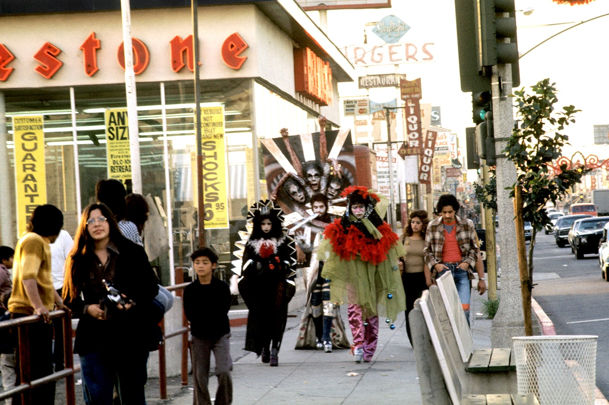
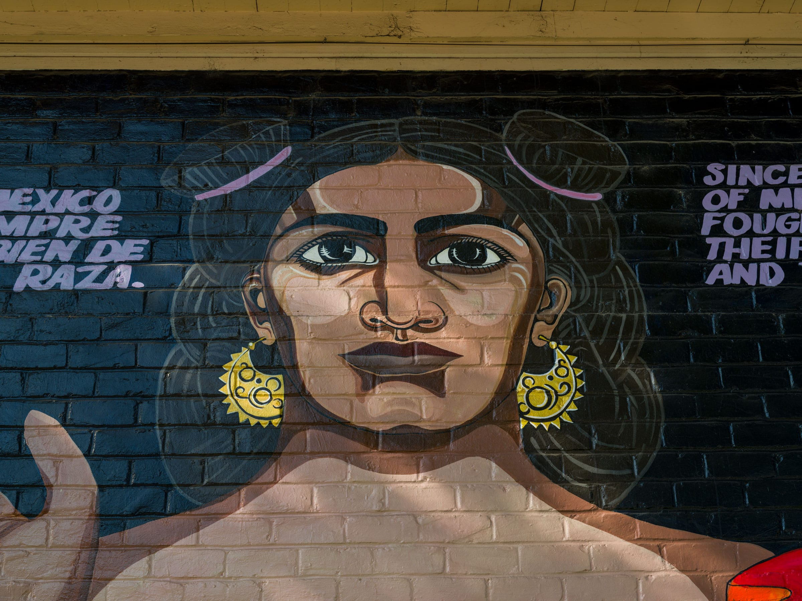
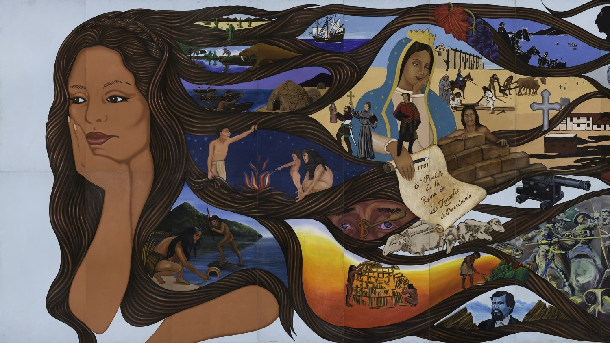
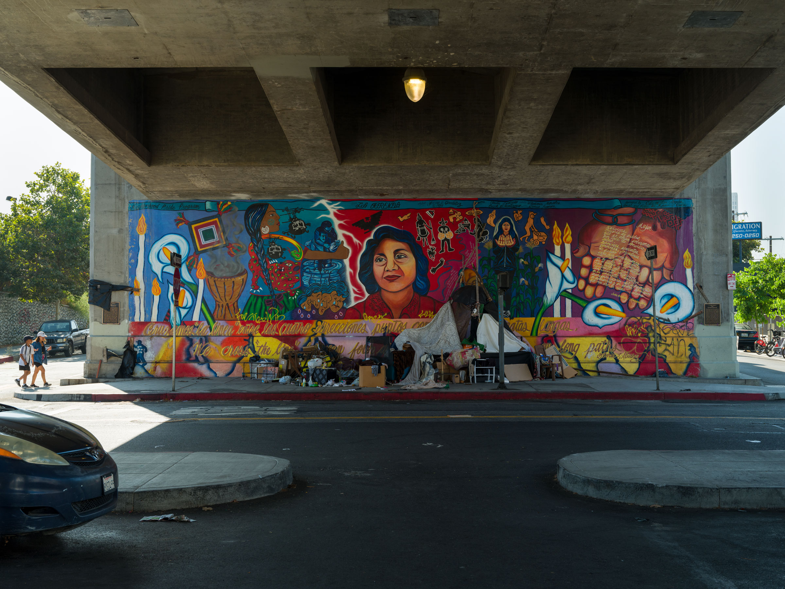
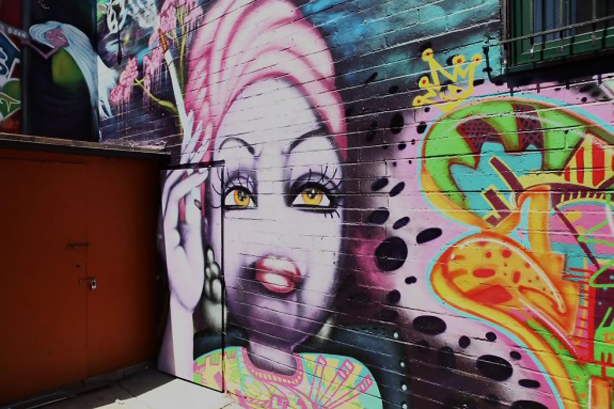
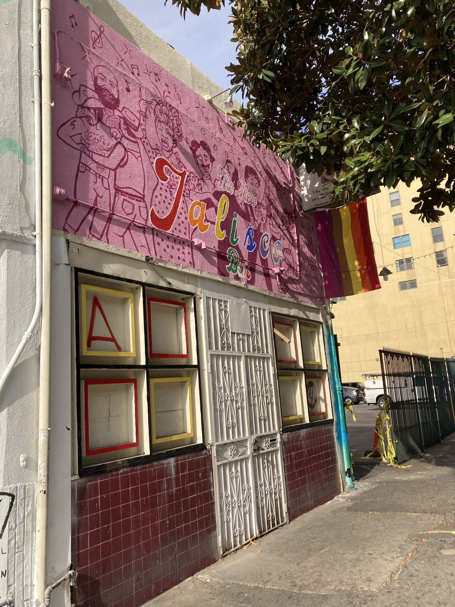

OBJECTS
OBJECTOS

THE WALKING MURAL
EL MURA CAMINANTE
1972
ASCO

HOMENAJE A LAS MUJERES DE AZTLÁN
1976
JUDITHE HERNÁNDEZ

L.A. HISTORY: A MEXICAN PERSPECTIVE
LA HISTORIA DE L.A.: UNA PERSPECTIVA MEXICANA
1981
BARBARA CARRASCO

LA OFRENDA
1989-1990
YREINA CERVÁNTEZ

MURAL AT THE HIGHER PATH
MURAL EN EL CAMINO SUPERIOR
2011
TIMOI

NOSTRA FIESTA
2019